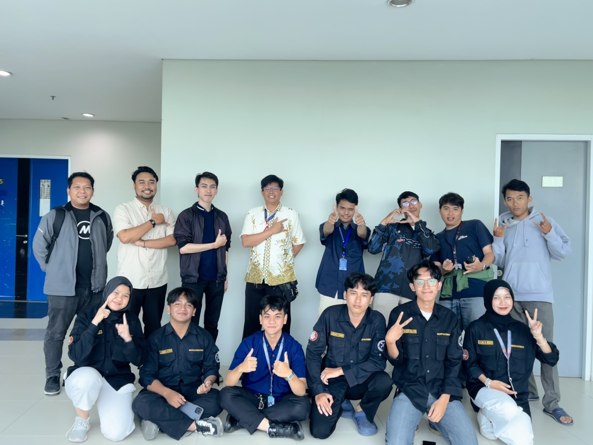
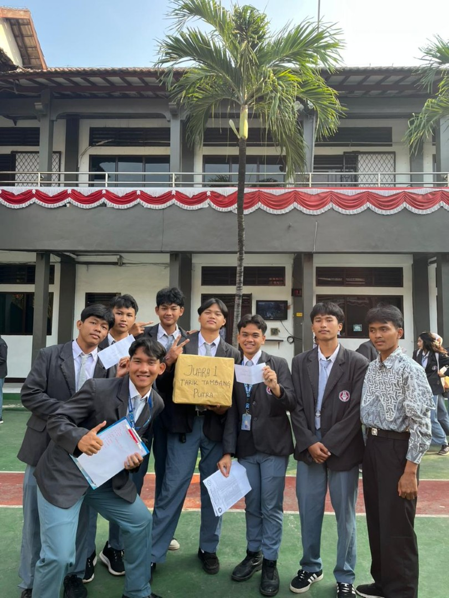
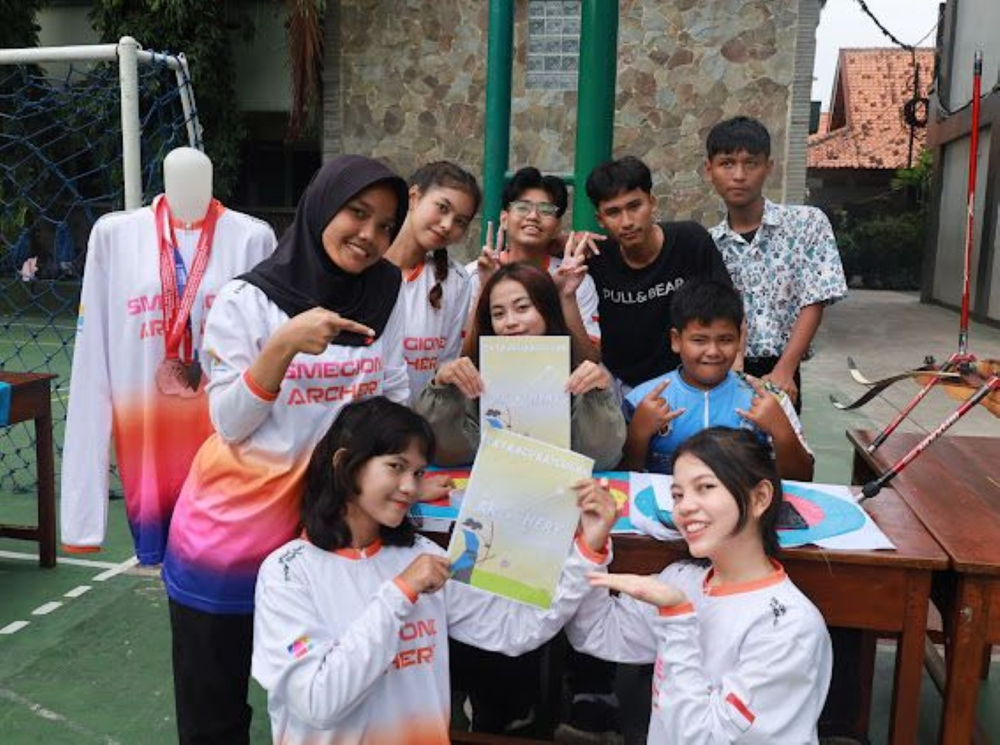
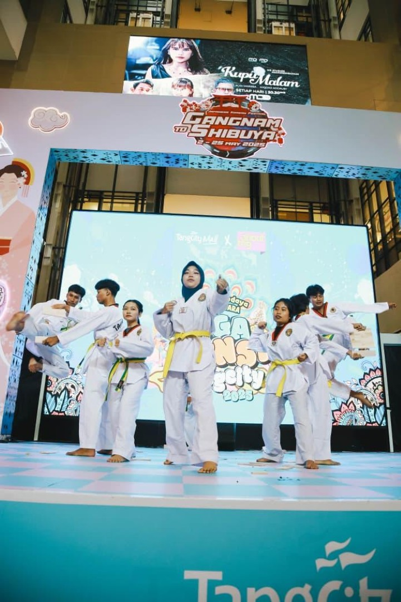
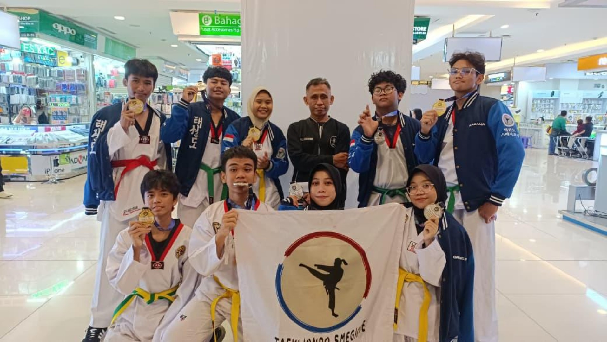
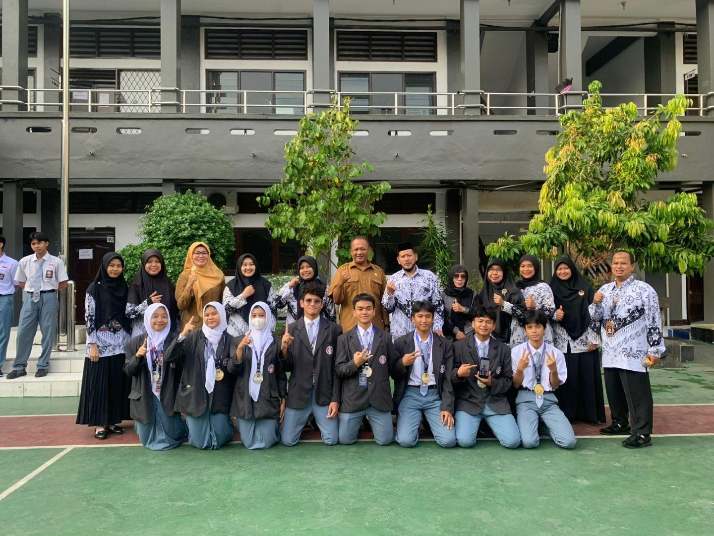
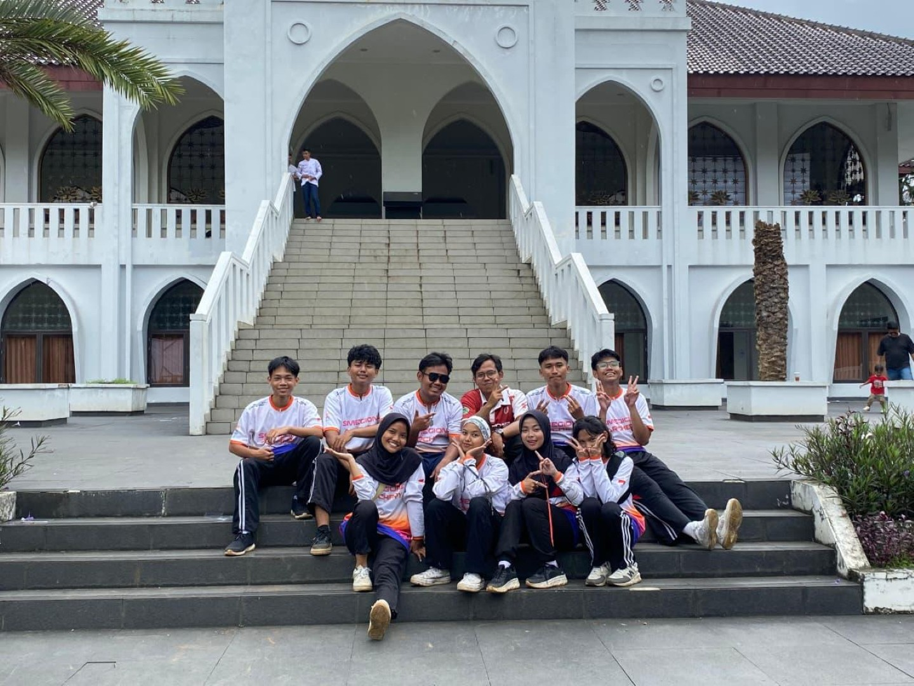
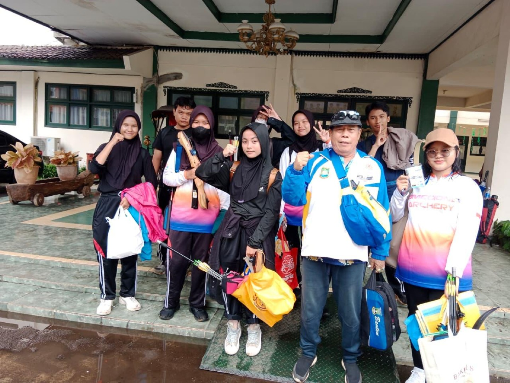
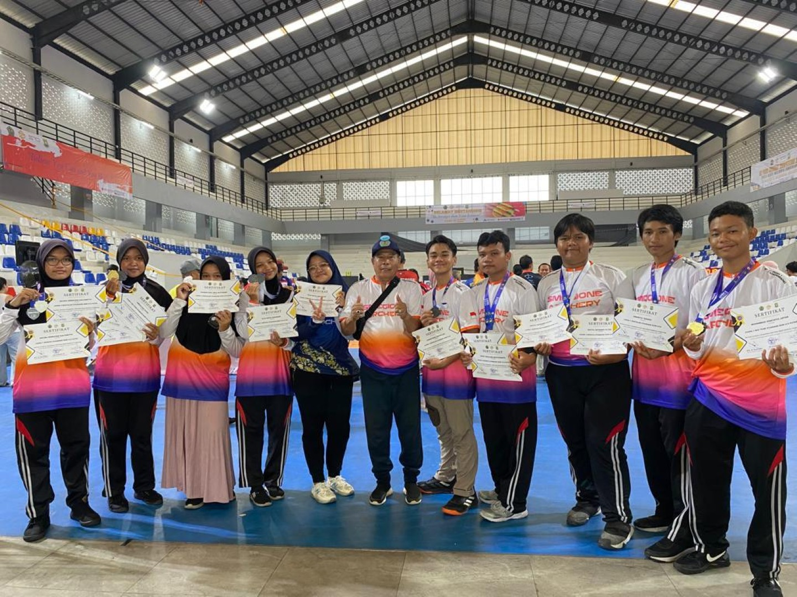

Berikut adalah beberapa aktivitas yang pernah saya ikuti selama berada disekolah.

Mengikuti kegiatan Praktik Kerja Lapangan (PKL) di Universitas Multimedia Nusantara (UMN) sebagai IT Support, dengan tugas membantu maintenance dan troubleshooting perangkat komputer, switcher, proyektor, memberikan dukungan teknis kepada pengguna, serta membantu pemeliharaan jaringan dan perangkat teknologi informasi untuk mendukung kelancaran operasional.

Mengikuti lomba kompetensi jaringan komputer yang diselenggarakan oleh jurusan Teknik Komputer dan Jaringan (TKJ) di sekolah, dengan berkompetisi melawan peserta dari kelas XI dan XII. Kegiatan ini memberikan pengalaman dalam menguji kemampuan konfigurasi jaringan, pemecahan masalah (troubleshooting), serta meningkatkan keterampilan teknis dan kemampuan berpikir cepat dalam menyelesaikan tantangan yang diberikan.

Mengikuti kegiatan demonstrasi dan pengenalan olahraga panahan yang diselenggarakan di sekolah, dengan mempelajari teknik dasar memanah, penggunaan peralatan panahan yang benar, serta melatih fokus, konsentrasi, dan ketepatan dalam mengenai target. Kegiatan ini juga memberikan pengalaman baru dalam bidang olahraga dan pengembangan keterampilan diri.

Saya pernah mengikuti Liga Pensi, yaitu ajang perlombaan dan pentas seni pelajar terbesar di Tangerang yang diselenggarakan di Tangcity Mall bekerja sama dengan Tangerang TV. Kegiatan ini menjadi pengalaman yang sangat berkesan bagi saya karena dapat menambah pengalaman, melatih rasa percaya diri, serta mengembangkan kemampuan dalam berkompetisi dan bekerja sama dengan orang lain.

Saya mengikuti kejuaraan Taekwondo Hobby Land Taekwondo Championship IV 2026 berjalan secara kompetitif dengan jumlah peserta yang mencapai sekitar 800 atlet muda dari sejumlah klub, sampai sekolah-sekolah di Kota Tangerang yang diselenggarakan oleh TangCity.

Menerima penghargaan dari pihak sekolah atas partisipasi dan pencapaian dalam ajang Taekwondo Hobby Land yang diselenggarakan di TangCity Mall (TC). Penghargaan ini diberikan sebagai bentuk apresiasi atas dedikasi, semangat kompetitif, serta kontribusi dalam mengharumkan nama sekolah melalui kegiatan olahraga.

Saya pernah mengikuti lomba panahan yang diselenggarakan di Pondok Pesantren Modern Sahid. Mengikuti lomba tersebut menjadi pengalaman yang sangat berharga karena saya dapat melatih fokus, ketelitian, serta rasa percaya diri dalam bertanding. Selain menambah pengalaman, kegiatan ini juga mengajarkan saya pentingnya disiplin, sportivitas, dan tetap tenang dalam menghadapi tantangan.

Saya mengikuti lomba panahan yang diadakan di Sekolah Cakra Buana sebagai salah satu pengalaman yang sangat berarti bagi saya. Dari kegiatan tersebut, saya belajar untuk lebih sabar, menjaga konsistensi, dan meningkatkan kemampuan dalam mengendalikan fokus saat bertanding. Selain menambah pengalaman di bidang olahraga, lomba ini juga memberikan kesempatan bagi saya untuk bertemu peserta dari berbagai sekolah dan menambah relasi baru.

Saya pernah mengikuti lomba panahan Deporis yang diselenggarakan di GOR Gondrong. Mengikuti perlombaan ini menjadi pengalaman yang menyenangkan sekaligus menantang karena saya dapat mengasah kemampuan, melatih mental bertanding, serta meningkatkan rasa percaya diri. Dari kegiatan tersebut, saya juga belajar pentingnya ketekunan, fokus, dan sportivitas dalam setiap pertandingan.